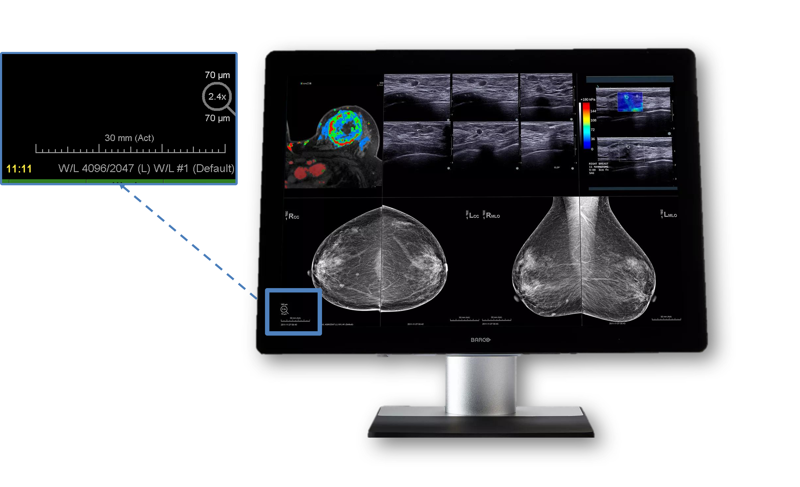
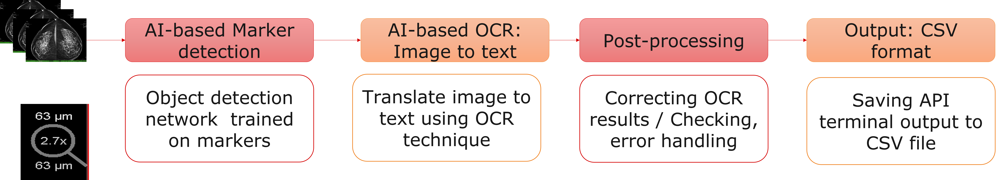
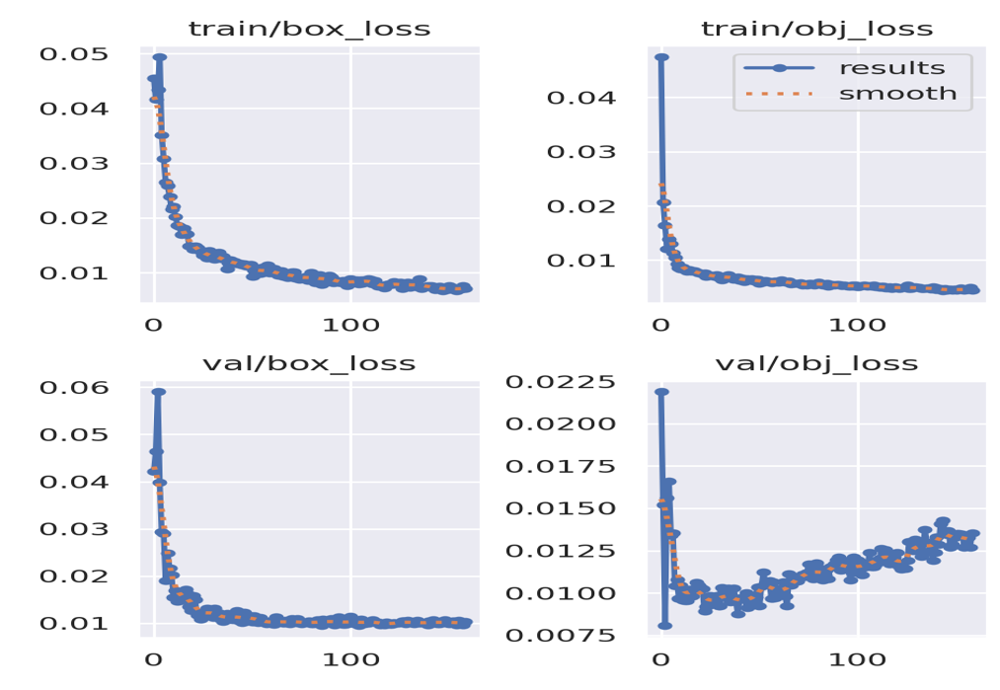
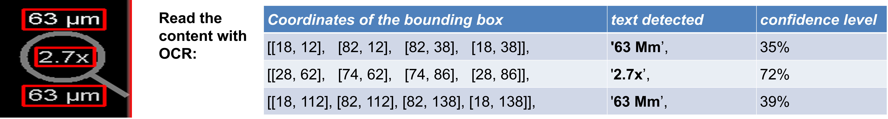

×
Medical Image Processing with AI
Phase1: Scale Detection in Mammography
PROBLEM OVERVIEW
We need to know the scale.


The main markers: Ruler & Magnifying Glass.
METHODOLOGY
We do not have access to metadata; DICOM data is not available on viewer. Markers on medical
image need to be detected and we need to develop AI algorithms.

YOLO OBJECT DETECTION TRAINING
• Trained on RTX 3090 GPU with 800 images
• YOLO: YOLO Documentation
GET THE BOUNDING BOX AND READ TEXT WITH OCR
• EasyOCR: state of the art and open source Optical Character Recognition (OCR) library.
• EasyOCR is built on top of PyTorch and OpenCV, it is an AI model which is pre-trained on more
than 80 languages.
• OCR: EasyOCR GitHub
RESULTS
Through the integration of AI-powered image processing techniques, including deep learning and
neural networks, our research achieves enhanced scale detection from markers in mammography
images. This innovative approach promises to improve early breast cancer detection and patient
outcomes.


CONCLUSIONS
AI-based Marker Detection
Through the integration of AI-powered image processing techniques, including deep learning and
neural networks, our research achieves enhanced scale detection from markers in mammography
images. This innovative approach promises to improve early breast cancer detection and patient
outcomes, marking a significant advancement in medical imaging technology.